MENTORIA DEV INDIVIDUALIZADA
Tenha acesso
ao auxílio individualizado
para absorver o conhecimento,
criar portifólio,
aprender à fundo
e conquistar sua vaga
em desenvolvimento web
Aprenda com quem
tem paixão em ensinar,
trabalha no mercado,
tem mais de 15 anos de programação
e não vai parar até você aprender todos os segredos.

SE VOCÊ QUER SER DEV, EU TE ACOMPANHO NESSA JORNADA.
Por que minha mentoria é diferente de outros cursos?
Por ser uma assinatura, você tem a liberdade de pausar se precisar.
As mentorias são sempre comigo, one on one (de um pra um).
Suporte pessoal diretamente comigo
Terá acesso progressivo à todos os meus cursos.
Conteúdo técnico (hard skills), pessoal e interpessoal (soft skills), de marketing e de empregabilidade.

Como Funciona a minha mentoria?
Individual
Encontros online ao vivo de 1 hora comigo, via meet, discord ou similar, em que vamos tratar das suas
necessidades, no seu tempo, em qualquer assunto ou forma. Sem julgamentos negativos, é o seu momento, só
para você!
Personalizado
O assunto pode seguir um cronograma ou pode ser de sua escolha, seja o básico da programação, ter 1 hora de
aula prática comigo, mostrar projetos ou fazer projetos comigo, sobre seu progresso nas aulas dos módulos
gravados, dúvidas, ideias, currículo, linkedin, vagas, foto profissional etc.

Acompanhado
Vou te acompanhar e perguntar como você anda, como está, se está conseguindo estudar! Afinal, você é meu
mentorado! Eu vou estar disponível durante a semana nos nossos canais para tirar dúvidas e, caso necessário,
fazer uma war room contigo! A war room é um termo profissional de um chat ou chamada em que os participantes
estão tentando resolver um problema urgente.
Mas será que serve para mim?
Começando do zero?
Vou te ensinar com total atenção e didática tudo que precisa para começar, instalar as ferramentas,
primeiro
programa, lógica de programação, e COMEÇAR SUA JORNADA CONTIGO!
Já sabe programar?
Vamos começar de onde você parou, ver o que precisa ser revisado, fortalecer os pontos à melhorar e
SEGUIR
CONSTRUINDO SUA JORNADA!
Pra quem é?
Se você:
✅ Não sabe nada de programação
✅ Já começou a estudar mas se sente perdido e sem suporte
✅ Já fez alguns cursos, mas tem dificuldade de fazer projetos sozinho
✅ Quer direcionamento para conseguir o primeiro emprego
✅ TENHO O PRAZER DE DIZER QUE A MENTORIA É PARA VOCÊ!
Se você:
⛔ Pensa que aprender a programar e conquistar uma vaga em 6 meses é possível para todos
⛔ Quer ser um desenvolvedor sênior em 2 anos
⛔ Deseja conquistar a vaga dos sonhos e curtir a vida de dev sem estudar mais nada
⛔ ESTA MENTORIA NÃO É PRA VOCÊ!
üì¢Trabalho √© coisa s√©ria, não seja s√≥ mais um querendo salário fácil numa área promissora.üöÄ
Depoimentos
pegar depoimento com as pessoas (alfredo, matheus rosa, victor, lucas costa)
O que você vai aprender na mentoria
Absolutamente tudo que eu sei, sem reservas
üíπ Programa de acelera√ß√£o:
Entre uma mentoria e outra, o mentorado, além de ter os desafios designados da semana, tem uma seleção de
módulos gravados para não ter desculpa de ficar parado e acelerar a sua evolução!
Nível 1
➡️ Introdução
➡️ Entendendo o terminal
➡️ Lógica de programação básica
➡️ Lógica de programação básica em C
➡️ Lógica de programação básica em PHP
Nível 2
➡️ Lógica de programação avançada em C (arquivo, estruturas de dados, ponteiros, structs)
➡️ Lógica de programação avançada em PHP
➡️ Criando Sistemas em PHP básico (json/arquivo)
➡️ Git e Github
➡️ HTML básico
➡️ CSS Básico
Nível 3
➡️ SQL e banco de dados
➡️ Criando Sistemas em PHP intermediário (sql)
➡️ Criando Sistemas em PHP avançado (roteamento e apis)
➡️ Javascript básico e APIs (backend pronto)
➡️ Javascript avançado e APIs (backend pronto)
Nível 4
➡️ HTML avançado
➡️ CSS avançado flexbox e grid
➡️ Ferramentas de mercado - Frameworks backend - Laravel
➡️ Ferramentas de mercado - Frameworks backend - Symfony
➡️ Ferramentas de mercado - Frameworks frontend - Vuejs
➡️ Ferramentas de mercado - Frameworks frontend - ReactJs
Nível 5
➡️ Testes no backend - Laravel e PhpUnit
➡️ Testes no backend - Symfony e Codeception
➡️ Testes no frontend - Vuejs e Jest
➡️ Testes no frontend - ReactJs e Jest
Nível 6
➡️ Deploy - backend Laravel
➡️ Deploy - backend Symfony
➡️ Deploy - frontend Vuejs
➡️ Deploy - frontend ReactJs
Nível Bônus
➡️ Empregabilidade - Currículo
➡️ Empregabilidade - Linkedin
➡️ Empregabilidade - Portfolio
➡️ Projetos: landing page e outros (completar)
Vantagens de participar da mentoria
Dúvidas respondidas rapidamente e possibilidade de war rooms: o objetivo é te destravar!
Proximidade total com o mentor.
Ter um lugar seguro para perguntar e conversar.
Desafio Dev Real
O mentorado irá participar do desenvolvimento completo de sistemas tendo o mentor como seu tech lead e PO.
Irá colocar em prática todos os conhecimentos adquiridos para fazer entregas organizadas por tarefas (em
sistema de gestão de projetos profissional) através do github, assim adquirindo experiência similar à
profissional, podendo contar como voluntariado.
Bônus
Aulão: Clean Code
Aulão: Clean Coder
Aulão: Clean Arch e suas aplicações
Aulão: copiar uns cursos por aí
Cronograma de estudos: front-end
Cronograma de estudos: back-end
Cronograma de estudos: fullstack
E se eu não gostar?
Antes de tudo, eu te ofereço uma mentoria gratuita para você ver e entender como eu conduzo o mentorado. Se
você gostar, você continua e contrata. Se não gostar, você não terá gasto nenhum valor!
O MENTOR
Me chamo Rui Leite
Sou software engineer, analista de sistemas de formação,
e estou no desenvolvimento de software há mais
de 15 anos.
Desde a faculdade eu percebi que tenho facilidade
e interesse para explicar
os assuntos dessa nossa área.
Fui monitor em disciplinas só pelo prazer de ensinar.
Nas empresas que trabalhei, além do destaque técnico,
sempre tive a atenção voltada para a condução dos
estagiários e juniors, que vez ou outra não recebem a
devida atenção dos seus seniors.
Também me destaquei por investir em processos de aprendizado
da jornada do cliente, produzindo vídeos para
implantação do sistema, garantindo agilidade e adesão.
Em 2020 me aventurei oferecendo mentorias gratuitamente
para duas pessoas que encontrei num grupo no
facebook. Essas se desenrolaram de forma intensiva, uma hora
todos os dias, de segunda à sábado.
Para
felicidade de ambos, em 6 meses foram contratados.
É um resultado que depende bastante do mentorado também.
Seu encontro comigo é uma vez por semana,
você é capaz de estudar uma hora todos os dias?
você é capaz de estudar uma hora todos os dias?
SE VOCÊ QUER SER DEV, EU TE ACOMPANHO NESSA JORNADA.
Plano
Mentor Economy
de R$ 70
ao mês
(R$ 840 ao ano) por
R$ 30
ao mês
R$ 360 ao ano
✅ Um (1)
encontro mensal.
Todos os benefícios abaixo*
Plano
Mentor Basic
de R$ 140
ao mês
(R$ 1680 ao ano) por
R$ 60
ao mês
R$ 720 ao ano
✅ Dois (2)
encontros mensais.
Todos os benefícios abaixo*
Plano
Mentor Plus
de R$ 250
ao mês
(R$ 3000 ao ano) por
R$ 120
ao mês
R$ 1440 ao ano
✅ Quatro (4)
encontros mensais.
Todos os benefícios abaixo*
* Todas as modalidades incluem
✅ Encontro de uma hora por videochamada.
✅ Gravar a vídeochamada.
✅ Pagamentos mensais, podendo interromper em qualquer momento.
✅ Suporte diretamente comigo via mensagens.
✅ Possibilidade "war room" para solucionar questões complexas.
✅ Programa de Aceleração: Acesso ao material gravado.
✅ Assuntos técnicos
✅ Assuntos comportamentais
✅ Habilidades sociais
✅ Habilidades de marketing
✅ Empregabilidade
✅ Check-in do mentor para acompanhamento
Benefícios e Termos Gerais
Encontros mensais de uma (1) hora, de um pra um com o mentor,
via chamada de vídeo, para aprender tecnologias,
fazer projetos, tratar de dúvidas, etc.
Direito de gravar as vídeo chamadas para consultar.
Pagamentos mensais, podendo interromper em qualquer momento.
Suporte fora de aula diretamente comigo via mensagens,
de acordo com disponibilidade do mentor.
Possibilidade de abrir chamada de vídeo "war room" para
direcionar e solucionar questões complexas.
Programa de Aceleração: Acesso ao material gravado
conforme o aluno progredir. O mentor liberará o acesso.
Os temas da mentoria incluem assuntos técnicos, comportamentais,
habilidades sociais, de marketing e empregabilidade.
O mentor irá interagir algumas vezes durante o mês
para acompanhar seu progresso.
Você pode decidir a frequência da interação.
Caso
O mentor garante que irá ensinar tudo que precisa
para entrar e permanecer na área.
O mentor NÃO GARANTE vagas para o mentorado, visto
que cada um é responsável pela sua tragetória.
O mentor irá sugerir e recomendar, mas NÃO IRÁ OBRIGAR
o aluno à realizar as atividades, aplicar a vagas,
criar currículos, aperfeiçoar redes sociais, etc.
A responsabilidade da realização é do aluno.
O mentor NÃO GARANTE que a tragetória será de
fácil dificuldade.
Perguntas Frequentes - FAQ
Não sei nada de programação, sua mentoria serve para mim?
Sim! A didática é focada no seu momento, seja você iniciante, intermediário ou mais avançado. Você vai
conseguir aprender sem problemas, mesmo sem saber nada de programação.
Preciso saber lógica de programação?
Vamos ensinar tudo para você! Então não precisa saber antes!
Posso ser programador sem ser bom em em matemática?
Sim! A matemática que recebemos nas escolas muitas vezes é baseada em decorar e utilizar fórmulas e regras,
mas não sabemos a lógica por trás delas. A matemática advém da lógica, mas a lógica não depende da
matemática. Só precisa saber matemática bem básica, da vida real.
Preciso fazer faculdade para entrar na área?
Não. Algumas empresas não pedem diploma, outras pedem. O mais importante é saber demonstrar na prática que
sabe fazer o trabalho que o desenvolvedor desempenha, e com qualidade. A faculdade pode ajudar a conseguir
vagas de estágio, mas não é necessária.
Sou muito velho para programar! Será que consigo?
Sim! A qualidade que você precisa ter é disposição para aprender e capricho para trabalhar! Toda empresa
busca desempenho, qualidade, velocidade, interesse. Mesmo que você tenha 30, 35 anos, tendo noção de que
você se tornará um desenvolvedor júnior e irá receber salário de desenvolvedor júnior, não há problema! Já
viu o filme “Um Senhor Estagiário” com Robert de Niro? É mais ou menos isso!
Já sei um pouco de programação, a mentoria serve para mim?
Sim! Na mentoria vou te ensinar tudo o que eu sei, isso inclui muito assunto intermediário e avançado. Já
tive alunos que já sabiam programar, já tinham feito outros cursos, mas não conseguiam avançar e aplicar em
projetos próprios. Vou ajudar com tudo o que precisar aprender.
Quanto eu preciso estudar por dia para entrar na área?
Estude o quanto você puder. Porém, podemos dizer que se você tiver 2 horas todos os dias, irá avançar com
bastante velocidade. Estudar um pouco todos os dias é melhor do que estudar muito um único dia.
Preciso ter um computador potente para estudar?
Qualquer computador mais simples, de até uns 10 anos atrás, que funcione bem e tenha 4Gb de memória RAM irá
dar conta do recado! Além disso, uma internet estável e um fone de ouvido com microfone são importantes para
nossas aulas, que serão ao vivo e individuais!
O curso tem certificado?
Sim, o curso tem certificado de conclusão.